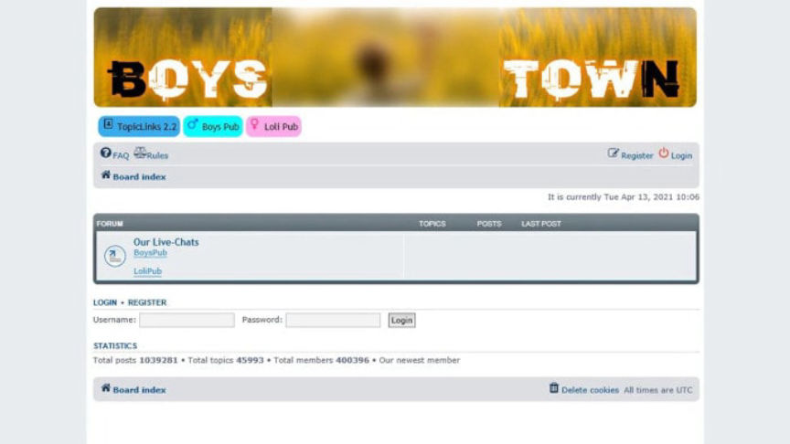
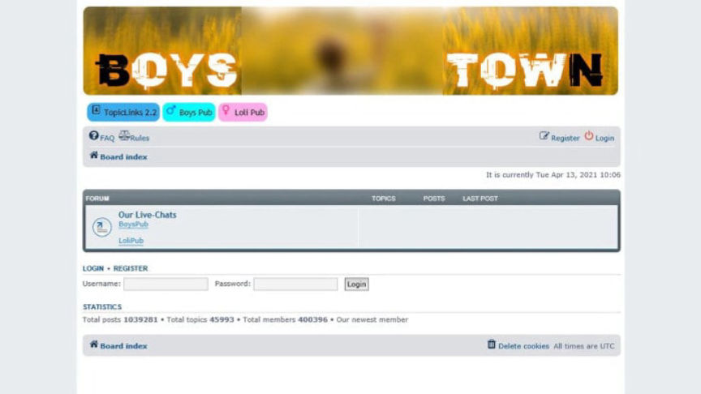

Four Arrested in Darkweb Child Abuse Site Investigation
Four suspects were arrested in a multi-agency international operation that took down one of the largest darkweb child pornography websites in the world.
The four suspects–all German nationals–were arrested during the course of an operation that shut down a darkweb child abuse site called Boystown. The site run from at least June 2019 and had more than 400,000 registered members from all over the world.

The site was taken down after several months of extensive investigations by an international task force formed by the German Federal Criminal Police and coordinated by Europol. The task force included law enforcement agencies from the Netherlands, Sweden, Australia, Canada, and the United States.
On April 14 and 15, 2021, investigators from the General Public Prosecutor’s Office in Frankfurt am Main Central Office for Combating Internet Crime (ZIT) and the Federal Criminal Police Office carried out searches on seven properties in Germany. The searches resulted in the arrest of three suspects aged 40, 49, and 64.

Other searches were carried out at the same time in Paraguay. The searches led to the arrest of a 58-year-old man from Northern Germany under an international arrest warrant.
Three of the suspects, the 40-year-old man, the 49-year-old man, and the 58-year-old man are accused of being the administrators of the “Boystown” website. The fourth suspect, a 64-year-old man from Hamburg was reportedly one of the most active users of the website. He had joined the site in July 2019 and had made more than 3,500 posts.
In addition to the suspects’ arrests, the searches resulted in the takedown of “Boystown” and a darkweb chat service for pedophiles.
Evidence seized in the operation will be used in victim identification and rescue. The evidence is also expected to contribute to the arrest of additional suspects.
The four suspects–all German nationals–were arrested during the course of an operation that shut down a darkweb child abuse site called Boystown. The site run from at least June 2019 and had more than 400,000 registered members from all over the world.
A screenshot of the platform priovided by the BKA
The site was taken down after several months of extensive investigations by an international task force formed by the German Federal Criminal Police and coordinated by Europol. The task force included law enforcement agencies from the Netherlands, Sweden, Australia, Canada, and the United States.
On April 14 and 15, 2021, investigators from the General Public Prosecutor’s Office in Frankfurt am Main Central Office for Combating Internet Crime (ZIT) and the Federal Criminal Police Office carried out searches on seven properties in Germany. The searches resulted in the arrest of three suspects aged 40, 49, and 64.

Other searches were carried out at the same time in Paraguay. The searches led to the arrest of a 58-year-old man from Northern Germany under an international arrest warrant.
Three of the suspects, the 40-year-old man, the 49-year-old man, and the 58-year-old man are accused of being the administrators of the “Boystown” website. The fourth suspect, a 64-year-old man from Hamburg was reportedly one of the most active users of the website. He had joined the site in July 2019 and had made more than 3,500 posts.
In addition to the suspects’ arrests, the searches resulted in the takedown of “Boystown” and a darkweb chat service for pedophiles.
Evidence seized in the operation will be used in victim identification and rescue. The evidence is also expected to contribute to the arrest of additional suspects.